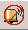

This describes the BSC local maintenance terminal, which is a component of the LMT software. It adopts GUI to operate and maintain the BSC6000, configure data for the BSC6000, and provide detailed online help for the system.
Interface
Figure 1 shows the main interface of the BSC6000 local maintenance terminal.
Title Bar
The title bar shows the title of the BSC6000 Local Maintenance Terminal window.
Menu Bar
Table 1 lists the menu items and their functions.
Menu Item |
Function |
|---|---|
System |
Managing the BSC, setting system parameters, and querying and configuring the time zone and the daylight saving time |
BSC Maintenance |
Maintaining devices, transmission, signaling, resources, licenses, and logs; and querying software information |
BTS Maintenance |
Maintaining the BTS software, querying BTS board information, maintaining channel status, performing handover, and maintaining the sites, cells, TRXs, and boards |
Configuration |
Importing and exporting network optimization data and network planning data, setting cell parameters in batches, backing up and browsing data, loading, restoring, and refreshing data, checking data consistency, exporting device archive files and measurement object formatted file, and collecting information about the DTRU configuration and the loading board configuration control switch by BM subrack, interface board, site, or cell |
Alarm Maintenance |
Querying alarms, managing alarm box, maintaining alarm logs, and setting alarms |
Window |
Displaying and switching different windows |
Help |
Providing help information about the BSS system and querying the server version and software information |
Toolbar
Figure 2 shows the toolbar of the BSC6000 Local Maintenance Terminal.
Table 2 describes the icons in the toolbar.
Icon |
Meaning |
Description |
|---|---|---|
|
Login |
Click this button to log in to the LMT again. You can also choose . |
|
Lock system |
Click this button to lock the LMT to prevent operations that are performed by unauthorized users. You can also choose . |
|
Logout |
Click this button to log out of the LMT (the LMT can be operated in offline mode). You can also choose . |
|
BSC management |
Click this button to manage the specified BSC. You can also choose . |
|
System configuration |
Click this button to set the autolock time, location code, cell identification code, route area display mode, and quantity of history data files. You can also choose . |
|
Start MML client |
Start the BSC6000 Local Maintenance Terminal. |
|
Navigation tree |
Click this button to display the navigation tree. |
|
Progress window |
Click this button to query data loading progress. The data loading progress consists of file transmission progress, BSC loading progress, BTS loading progress, BTS activation progress, and BTS log loading progress. |
|
Browse alarm |
Click this button to browse the alarm information. You can also choose . |
|
Query history alarms |
Click this button to query history alarms. You can also choose . |
 |
Stop alarm sound |
Click this button to stop the alarm sound of the alarm box. You can also choose . |
|
Refresh LMT data |
Click this button to refresh the data saved in the LMT to synchronize it with the configuration data in the server. You can also choose .
NOTE:
This icon is used to refresh configuration data only. |
|
Browse configuration data |
Click this button to browse the data of entities such as the BSC, BTS, cell, TRX, and channels. |
|
Help |
Click this button to find help information. You can also choose . |
|
Exit |
Click this button to exit from the BSC6000 Local Maintenance Terminal. You can also choose . |


Navigation tree
The Navigation Tree has two tab pages, as described in Table 3.
Tab Page |
Function |
|---|---|
Management Tree |
Displaying all the sites, cells, and TRXs in the BSC and providing query, management, and browsing of the objects |
Trace & Monitor |
Providing CS-domain and PS-domain interfaces and signaling link tracing, CPU/DSP usage, bit error rate, port bit error rate, cell performance, GPRS flow, utilization rate of Abis HDLC transmission resources, and DSP service resource monitoring and browsing in offline mode |
Right-click the root node BSC6000. A shortcut menu is displayed, as shown in Figure 3.
Table 4 describes the operations listed in the navigation tree.
Operation |
Operation Type |
Description |
|---|---|---|
Configuring the BSC attributes, system clock, BSS local switching, SS7 signaling point, PCU, subrack communication link, semipermanent link, subrack-OSP mapping, and remote main subrack, and board E1 connection, and adding BSC cabinets |
Data configuration |
For details of functions of data configuration on the LMT, see the BSC Initial Configuration. |
Maintaining transmission and signaling and maintaining user resources |
Operation and maintenance |
For details, see Maintaining Transmission and Signaling and Maintaining BSC User Resources. |
Expanding nodes, collapsing nodes, and searching sites and cells |
Navigation tree operation |
|
BSC Panel
The panel of the BSC6000 has two tabs. On the Management Tree tab page, select an object, and the BSC panel displays the corresponding tab page. By default, the system displays the BSC Device Panel tab page, as shown in Figure 4.
When the root node BSC6000, 2G External Cells, or 3G External Cells is clicked, the BSC Device Panel tab page is displayed by default.
When a site or a TRX is clicked, the BSC panel is displayed, as shown in Figure 5. By default, the Site Device Panel tab page is displayed.
When a cell is clicked, the BSC panel is displayed, as shown in Figure 6. By default, the Cell Attributes tab page is displayed.

When a configured 2G or 3G external cell is clicked, the BSC panel is displayed, as shown in Figure 7. By default, Extern Cell Attributes tab page is displayed.
Table 5 describes the functions available from the BSC panel tab pages.
Tab Page |
Main Function |
|---|---|
BSC device panel |
This tab page displays the configuration information about the BSC6000. You can double-click a board to view the board attributes or right-click a board to display the configuration and maintenance shortcut menu. |
Site device panel |
This tab page displays the configuration information about the site. You can double-click a board to view the board attributes or right-click a board to display the configuration and maintenance shortcut menus. |
Cell attributes |
In this tab page, you can browse the attributes of a cell. |
External cell attributes |
In this tab page, you can browse the attributes of an external cell. |
BSC attributes |
In this tab page, you can browse the BSC information. Figure 8 shows the BSC Attributes tab page. |
Table 6 describes the functions of the BSC panel tab pages.
Icon |
BSC Device Panel |
BTS Device Panel |
|---|---|---|
|
- |
The BTS board that can function without the power supply. |
|
The BSC board is unavailable in the subrack. |
The BTS board is unavailable in the subrack. |
|
The type of the board in the BSC subrack is inconsistent with the type of the board configured on the LMT. |
The board is configured in the BTS subrack. However, the LMT is not configured with the board. |
|
- |
The board is manually set to be unavailable. |
|
The BSC board is faulty. NOTE:
If the GOMU board is red, it indicates that the COMU board is out of position or the Daemon is not started. |
|
|
The BSC board is normal. |
The BTS board is normal. |
|
The BSC standby board is normal. |
The BTS standby board is normal. |
|
- |
The BTS standby board reports a critical alarm. |
|
- |
The BTS standby board reports a major alarm. |
|
- |
The BTS standby board reports a minor alarm. |
|
The server does nor report the state of the board. |
- |
|
The LMT is not configured with the board. |
- |
Status bar
- Displaying the login of users.
- Displaying the login status.
- Displaying the server time.
- The status bar indicates whether the existing data in the BSC6000 Local Maintenance Terminal is consistent with that in the server. If they are inconsistent, click the "Refresh LMT data" button to synchronize the data.
Help
Table 7 lists the contents and accessing methods of .
Content |
Accessing Method |
|---|---|
|
In the main interface of the BSC6000 Local Maintenance Terminal:
|
Other Buttons
Table 8 lists other buttons that may appear during the OM.
Button |
Meaning |
|---|---|
|
Moving the selected items to the status bar on the right |
|
Moving all the items to the status bar on the right |
|
Moving the selected items to the status bar on the left |
|
Moving all the items to the status bar on the left |
|
Moving the selected items to the status bar below |
|
Moving all the items to the status bar below |
|
Moving the selected items to the status bar above |
|
Moving all the items to the status bar above |